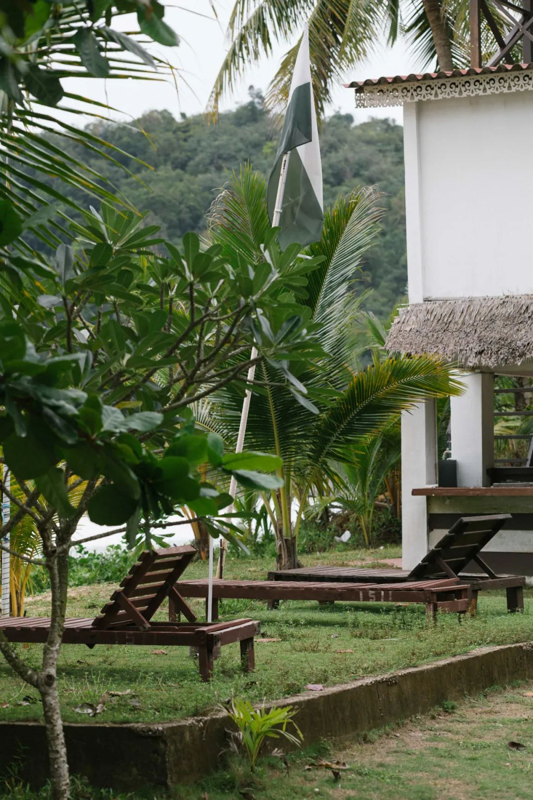
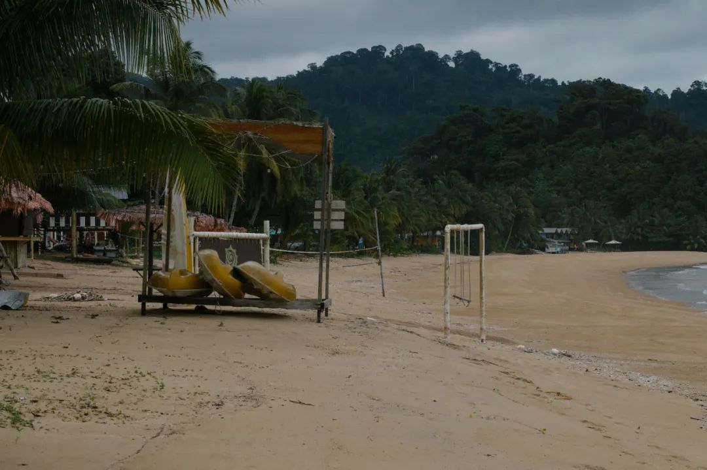
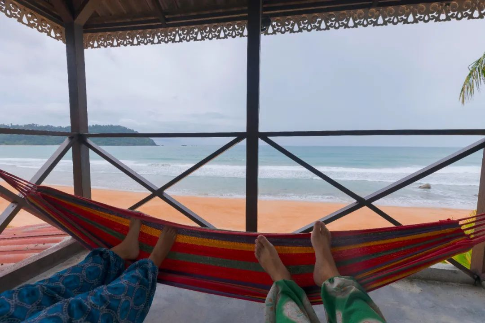

仔细看去，路旁的形貌也还是难以辨认。不知道路后边有什么。之前开车去马来西亚柔佛州的迪沙鲁时，就有过这个疑问：为什么有的是雨林？有的又是丛林？对向驶过，人们把晚上的车都叫夜车，但夜晚导致的失明又不叫夜盲。人的视网膜上留下几条细胞被强光烧灼后的痕迹。闻不到灼烧的味道，倒也令人疑心，烧灼是否确有其事。要了周五的假，因而可以周四下班就出发。过关兀兰，用过晚餐后到拉庆汽车站。尝试在英文字母拼成的马来文短语中，找前往丰盛港的车。听不懂内容的马来语歌曲在车厢里循环，好在和车厢里的灯光调得一样浅。凌晨十二点半，到丰盛港汽车站。站外没有护栏也没有工作人员，雨把我们留在了车站里，地上多的是瓦楞纸盖着发出奇怪味道的物件。只有我们四个人在这一站下车，原来这辆车还会开很远。以后里手了的话，这时应该加小费，让司机把我们送到目的地。深夜小镇打不到车，于是尝试了去说服两个路过的警察，开私家车把我们分批送到了酒店。夸了一些很有情绪力量的词。于我而言，这次短途旅行的主要事件是疗养，关键词是开朗。一个梗：如果能每天出去玩，我该会是个多么阳光又开朗的人啊？前提条件多写也是费力，不如取消之。从学校开始、过海关、到拉庆，这里是两小时；从拉去到丰盛港的车程是两小时；从丰盛港一早出发去雕门岛，也是两小时。兴许是因为季风的原因，我们坐的船前舱里迎着风浪摆动船头就像是拧着头往前冲一样，常常能感觉到船体失重。数完了水手小仓库库门上的贴纸，我又开始数马来西亚南部的岛礁链。海水从近岸的浑浊，到离开岛礁链之后的碧蓝，到近雕门岛时变得青绿/碧绿。失重的船浪让人定难睡着，我看着窗外开始默背卦辞，却成了前舱除了水手外为数不多还有行动能力的人。岛不小，即算是以十分钟船程的一个停靠港，在西侧也有五个。下船后，看水中的鱼就像在看浮在空中的气球。水是流体、空气也是，皆若空游无所依。地接司机把我们放在肌肉拉力车的车厢里，顺手拉上了两个本地人的外快。外快和路上会车的人打着招呼。我们看路边的坡度警告，大于四十五度的斜坡，司机退档后关了空调，和尾箱里的两个外快一起啸叫着冲下山去。Tioman，叫雕门也好，叫刁曼也罢，是一个人烟稀少的火山岛。有一个小机场，但只有短线的航班。旺季得看季风，一般四月到九月风平浪静的时候，可以潜水、也可以冲浪和海钓，这会儿人很多。现在是淡季，每天能见到的人都不超过我在实验室那个小房间里一天要见到的人。去掉极值，如果把每一天我和每一个遇到的人，按照社交距离和时间进行微分，得到一个每天和多少人次有多少距离和多少时间的相处，那么岛上的这个社交负荷值只有每天在学校的三分之一。我并非完全讨厌人多的环境，事实上每天也需要寻溯其他人类的痕迹，事实上每天也需要见到人，但是需要排除一部分需要我表演得很累才能刚刚及格维持社交关系的人。到了住的小木屋，放下行李箱后，便在海边没有人的长椅上躺了下来。浪涛拍案，声音不小。虽然阴着天，但紫外线很强。朋友一会儿叫我去吃饭，我回房洗了个脸。只区区两小时，在新加坡一直软塌塌趴在头皮上的头发，在新加坡看起来像是马上就要秃了，到岛上接触接触自然就像获得了静电，在两鬓炸开膨卷起来。脸也晒红了，去吃个肉饼汉堡补一补。吃完饭有些困，于是继续去长凳上假寐。也许有真寐的成分在，无暇区分，只觉得在自然环境下的每一刻都在帮助我恢复对周遭世界和自然环境的感知能力。浪涛声和大陆风交响棕榈叶的声音，提醒我还长着一对耳朵。
为什么人要听些奇怪的语言，担心一些完全没必要的事情？不懂。社会规训人，成为合力机器上的一环。需要一些自然回魂。万能青年旅店的词作者很厉害。我能知道在岛上住着的时候，即使收到消息，也能很轻易的忘却不喜欢的声音。关上门，我们住在小木屋里。斜顶的洗漱间，有蚊帐把缺角帐住。洗澡的时候，能听到外边波涛的声音。如果不是反复提醒自己身在马来西亚，不然地话，很容易代入我在长沙或者武汉，听外边风雨大作。停留在海边，有时候我会感觉我真的进入将睡未睡的状态了，因为大脑皮层活跃得开始在做梦。已经进入了一些设定的情境，譬如：等菜市场上的肉铺老板给我割点新松解好筋膜的肉回去蒸着吃、开车时在反光镜上挂着塑料袋兜着的绿色塑料抽绳咖啡、和朋友仔细研究盘头马的妙用。
借了块冲浪板，准备下水冲浪。虽然浪很大，但还是想试试。试试的结果也不出意料，被狠狠地教做人。之前在迪沙鲁的海滩边，教练说现在的浪非常适合初学者，那会儿我还不觉得。十一月底，雕门岛的海浪得有中级难度，连跨过最近岸的第一个高浪都困难。海浪在我的裤腿、束腰、鼻子耳朵嘴巴眼睛，每一个看起来能操作一下的地方都塞点沙子。一个小时里，屡败屡战，最后也只在刚好抓到浪的时候试了一下连板一起回岸边。此外，根本都做不到离岸远一点去找浪。很快到了晚餐时间。空旷的餐厅只有两桌客人，朋友说这要在旺季会坐人坐得满满当当。想那种情形都令人感到社恐，现在淡季倒是正合适。
吃饭、看海、撩拨海边的小螃蟹、睡觉、醒来继续看海、吃饭、继续看海。海很神奇，即使涛声变化不多，但依然觉得好像这一次又不一样。所有和生命有关的记忆都在这时被唤醒。涛声与涛声间隔的一会儿世界安静，也显得格外寥廓。蟹脚步伐很快，快到在海边一亮起闪光灯或者打火机，就会倏忽远去。可能这就是健硕的腿上功夫吧（笑）站在能被潮汐涨落冲到的沙滩上，会随着潮汐而剥去砂石，从而慢慢陷落。这种感觉就像是才在棉花上，然后脚旁边滴了一圈酒精乙醚丙酮之类，然后有人来一把火把棉花都烧了，于是轻微失重着下坠。据说沙面上留下的小洞，是寄居蟹或者其他海洋生物的呼吸孔。有经验的海边居民可以根据孔的大小形貌来判断这底下的是什么动物，这也是大部分赶海的来源。能感觉到的，我踩陷下去的时候碰到了硬质的东西。朋友说能感觉到螃蟹在拱旁边的沙子。想体会一下那是什么感觉。尽管还是没能不用耳塞，但也睡下了最近以来最好的一觉。醒来是早餐时间，去海边活动一番，回来接着睡，睡醒了就是午餐时间。我说这就是我自下半年返校以来，过得最惬意、安适和自在的一天。的确如此。塔楼有三层，海浪涨到最高的时候，离楼基不超过五米。山势在周围左龙右虎，有坐、无案，故而海浪入内无情冲刷，从风水上来看倒不藏风纳气，也因而让自然的威力更为显著。靠个凳子，把脚搭在吊床上荡来荡去。下了点小雨。塔楼上，面海的方向全不设限，三面开窗，比四面敞阔的轩只多了一点承重墙。雨滴飘进来，有个成语叫栉风沐雨，原意为用风梳头、以雨洗发，我觉得就停在这里好，不需要取其引申义了。
店老板告诉了我们一条只有本地人才知道的近路去瀑布，但是提醒我们瀑布的水也很浑浊，不要报太多指望。踩着人字拖去爬热带雨林，怎么能不算是一种松弛感呢（笑）已经没什么底部纹路的拖鞋在热带雨林里只是一种支持保护了，防滑的效果几乎没有，不得不再次惊讶可以穿着拖鞋去爬火山的人，以及认真考虑过相比于摔倒是不是倒着下山或者用尾椎骨刹车会比较妥当。热带雨林的确时不时就会来一阵雨，以致于路上的青苔就像常年不会干。路过一片丛林工业区，看起来像水电变电站之类的基础设施。管道上也有不少青苔。我寻思，对着旁边已经锈蚀的地方拿个榔头重击一下：那会是我吸入的孢子更多，还是被铁锈片刮到的可能性更大？不知道，也没有榔头给我去做个实验试一下。
不要挑战人性，同时也不要在陌生的国家挑战黑夜和海洋。没看到瀑布，因为要在设定好的时间折返，但是可以在黄昏时候去听潮汐。疗养两天，感觉离焦躁很远、离平静很近，离友好的人很近、离无聊的人很远。听歌、唱歌、和远在天边穿着厚衣服的好朋友打视频电话，而平板的感光就是捕获不到一点月光的痕迹。十月十二，是《记承天寺夜游》发表第九百四十周年纪念日。月色入户、水中藻荇交横。热带的岛屿上，能真切体会到什么叫明月照得白茫茫大地，完全不需要额外的光来帮助辨认身边朋友的表情又或走来走去的路。月光已然明白到可以照明所有。后半夜，云遮雾绕成为过去式，换到露天的楼下开始躺着数星星：木星、天狼星、猎户座、船桅座、狮子座。数不清名字的星星，很多，连四等星也看得真切。明灭不定。看到了流星一刹那划过天空。应该是今年第一次看到流星。看过之后都不需要许愿了，只觉得能出来走走、在海边安静地把自己包裹溶化在自然里，就已经是对现在生活的一次适时又急需的充电。拂晓，离开住地去港口。一边翻山，一边看到升起了启明星。海港还在蓝色时刻。是一种沉浸的蓝色。我不希望世界很吵闹，这是我为什么不喜欢日出后。日出前的蓝色很好，我们在离岗的侯船厅里等船来。
离岛之后，离现实世界原来越近。会发现多了一些情绪稳定：只要我不想马上就进入那种，每天厌学的状态，就可以不进入，就可以继续安稳地按照自己的想法过生活。不会因为一些矛盾而变得很差，尽管也没有多想与人交流，这对自己已经是值得夸一夸的进步了。